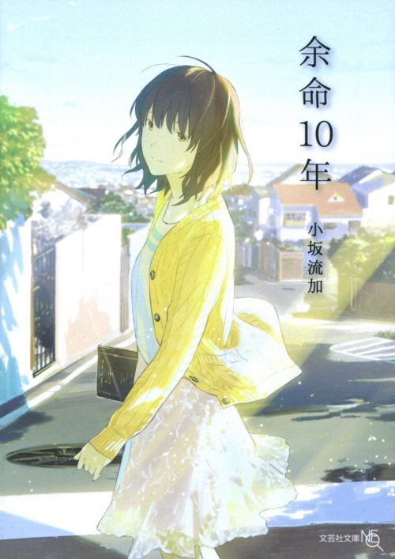
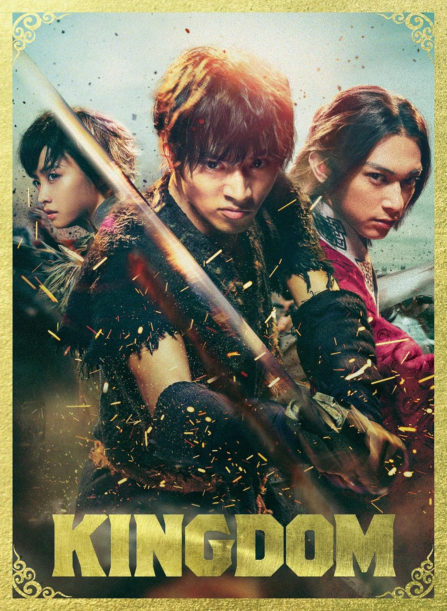
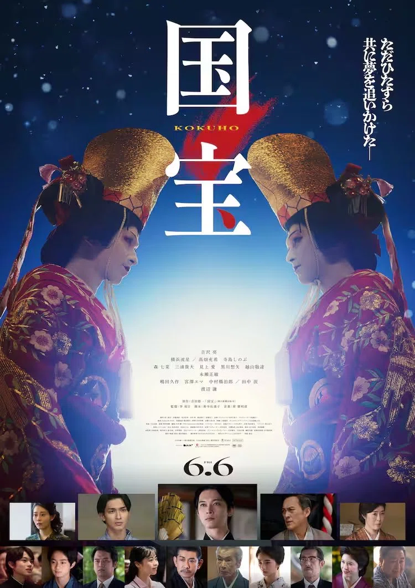

余命10年
あらすじ
不治の病で余命10年と告げられた茉莉は、恋をしないと心に決めて生きていたが、同窓会で出会った和人との交流が彼女の心を揺さぶっていく。限られた時間の中で紡がれる、切なくも温かなラブストーリー。

キングダム
あらすじ
戦乱の中国・春秋戦国時代を舞台に、戦災孤児の少年・信（しん）が「天下の大将軍」を目指して壮大な夢を追う物語。

国宝
あらすじ
戦後の日本を舞台に、歌舞伎にすべてを捧げた男・喜久雄の波乱の人生を描く。伝統芸能と時代に翻弄されながら、芸に生きる姿が胸を打つ人間ドラマ。